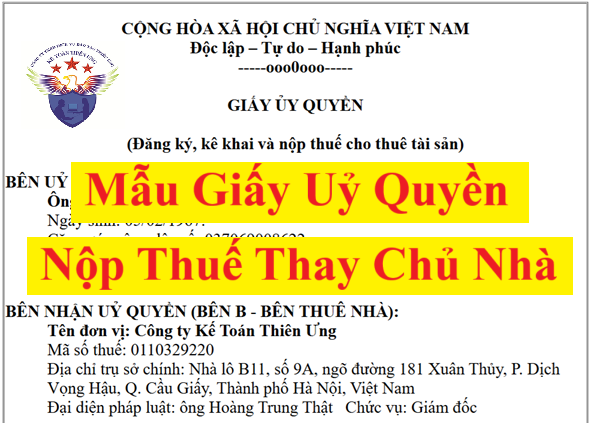

Để làm được thủ tục đăng ký thuế, kê khai và nộp thuế cho thuê tài sản thay cho chủ nhà có tài sản cho thuê thì Cá nhân (chủ nhà, chủ tài sản cho thuê) sẽ làm giấy ủy quyền để ủy quyền cho doanh nghiệp thực hiện các nghĩa vụ kê khai nộp thuế này với cơ quan thuế
Dưới đây, Công ty đào tạo Kế Toán Diệu Tâm xin được cung cấp mẫu giấy ủy quyền kê khai và nộp thuế thay chủ nhà mới nhất năm 2026 để các bạn tham khảo:
|
CỘNG HÒA XÃ HỘI CHỦ NGHĨA VIỆT NAM Độc lập – Tự do – Hạnh phúc -----ooo0ooo----- GIẤY ỦY QUYỀN (Đăng ký, kê khai và nộp thuế cho thuê tài sản) BÊN UỶ QUYỀN (BÊN A – BÊN CHO THUÊ NHÀ):
Ông: Nguyễn Quốc Huấn
Ngày sinh: 05/02/1967. Căn cước công dân số: 037069008622 Nơi cấp: Cục cảnh sát quản lý hành chính về trật tự. Cấp ngày: 02/01/2023 Địa chỉ cư trú: Tổ dân phố Quang Thừa, Phường Nguyễn Uý, Ninh Bình BÊN NHẬN UỶ QUYỀN (BÊN B - BÊN THUÊ NHÀ):
Tên đơn vị: Công ty Kế Toán Diệu Tâm
Mã số thuế: 0119365824 Địa chỉ trụ sở chính: Nhà lô B11, số 9A, ngõ đường 181 Xuân Thủy, P. Cầu Giấy, Thành phố Hà Nội, Việt Nam Đại diện pháp luật: ông Trần Quốc Hưng Chức vụ: Giám đốc ĐIỀU 1: NỘI DUNG VÀ PHẠM VI ỦY QUYỀN
Căn cứ vào hợp đồng 01/2026/HDTN-TU ký ngày 02 tháng 01 năm 2026
Bên A ủy quyền cho bên B thực hiện các công việc sau đây: Làm thủ tục đăng ký thuế, kê khai và nộp các khoản thuế cho thuê tài sản theo quy định của pháp luật ĐIỀU 2: THỜI HẠN ỦY QUYỀN
Kể từ ngày 02 tháng 01 năm 2026 đến ngày 31 tháng 01 năm 2026
ĐIỀU 3: NGHĨA VỤ CỦA CÁC BÊN
Bên A và bên B chịu trách nhiệm trước pháp luật về những lời cam đoan sau đây:
ĐIỀU 4: ĐIỀU KHOẢN CUỐI CÙNG
1. Bên A chịu trách nhiệm cho Bên B thực hiện trong phạm vi được ủy quyền. 2. Việc giao kết Giấy uỷ quyền này hoàn toàn tự nguyện, không bị lừa dối hoặc ép buộc
1. Hai bên công nhận đã hiểu rõ quyền, nghĩa vụ và lợi ích hợp pháp của mình, ý nghĩa và hậu quả pháp lý của việc giao kết Giấy ủy quyền này.
Hà Nội, ngày 02 tháng 01 năm 20262. Hai bên đã tự đọc Giấy ủy quyền, đã hiểu và đồng ý tất cả các điều khoản ghi trong Giấy và ký vào Giấy ủy quyền này. 3. Giấy uỷ quyền này có hiệu lực từ ngày hai bên ký.
|
Lưu ý về các thời hạn liên quan đến thuế cho thuê tài sản:
1. Đăng ký thuế (Đăng ký mã số thuế hộ, cá nhân kinh doanh - Nếu chủ nhà chưa có):
Theo khoản 2 Điều 33 Luật Quản lý thuế số 38/2019/QH14):
Lần đầu tiên cho thuê tài sản, cá nhân phải đăng ký thuế cho thuê tài sản trong thời hạn chậm nhất là 10 ngày làm việc kể từ ngày ký hợp đồng cho thuê tài sản
Nếu đăng ký chậm (Qúa 10 ngày làm việc kể từ ngày ký hợp đồng cho thuê tài sản) thì sẽ bị xử phạt theo quy định tại Điều 10 Nghị định 125/2020/NĐ-CP quy định về xử phạt hành vi vi phạm về thời hạn đăng ký thuế
(Phạt tiền từ 1.000.000 đồng đến 10.000.000 đồng tùy vào thời gian chậm)
2. Đối với doanh nghiệp nộp thuế thay cho cá nhân cho thuê tài sản thì thời hạn kê khai và nộp tiền thuế thực hiện theo quy định tại điều 16 của thông tư 40/2021/TT-BTC như sau:
- Thời hạn nộp hồ sơ khai thuế:
+ Thời hạn nộp hồ sơ khai thuế đối với tổ chức, cá nhân khai thuế thay, nộp thuế thay cho cá nhân trong trường hợp khai tháng hoặc quý như sau:

+/ Tổ chức, cá nhân khai thuế thay, nộp thuế thay cho cá nhân thuộc trường hợp nộp hồ sơ khai thuế theo tháng thì thời hạn nộp hồ sơ khai thuế chậm nhất là ngày thứ 20 của tháng tiếp theo liền kề tháng phát sinh nghĩa vụ khai thuế thay, nộp thuế thay.
+/ Tổ chức, cá nhân khai thuế thay, nộp thuế thay cho cá nhân thuộc trường hợp nộp hồ sơ khai thuế theo quý thì thời hạn nộp hồ sơ khai thuế chậm nhất là ngày cuối cùng của tháng đầu tiên của quý tiếp theo liền kề quý phát sinh nghĩa vụ khai thuế thay, nộp thuế thay.
+ Tổ chức, cá nhân khai thuế thay, nộp thuế thay nộp hồ sơ khai thuế theo từng lần phát sinh kỳ thanh toán chậm nhất là ngày thứ 10 kể từ ngày bắt đầu thời hạn cho thuê của kỳ thanh toán.
+ Tổ chức, cá nhân khai thuế thay, nộp thuế thay nộp hồ sơ khai thuế năm là ngày cuối cùng của tháng đầu tiên kể từ ngày kết thúc năm dương lịch.
- Thời hạn nộp thuế:
Thời hạn nộp thuế chậm nhất là ngày cuối cùng của thời hạn nộp hồ sơ khai thuế. Trường hợp khai bổ sung hồ sơ khai thuế, thời hạn nộp thuế là thời hạn nộp hồ sơ khai thuế của kỳ tính thuế có sai, sót.
----------------------------------------------------------------------------
Các bạn muốn tải (download) các Mẫu giấy ủy quyền kê khai và nộp thuế thay chủ nhà mới nhất năm 2026 trên đây về để tham khảo và sử dụng thì có thể gửi mail về địa chỉ mail: ketoandieutam@gmail.com => Kế Toán Diệu Tâm sẽ gửi lại Mẫu giấy ủy quyền kê khai và nộp thuế thay chủ nhà mới nhất năm 2026 này cho các bạn
----------------------------------------------------------------------------